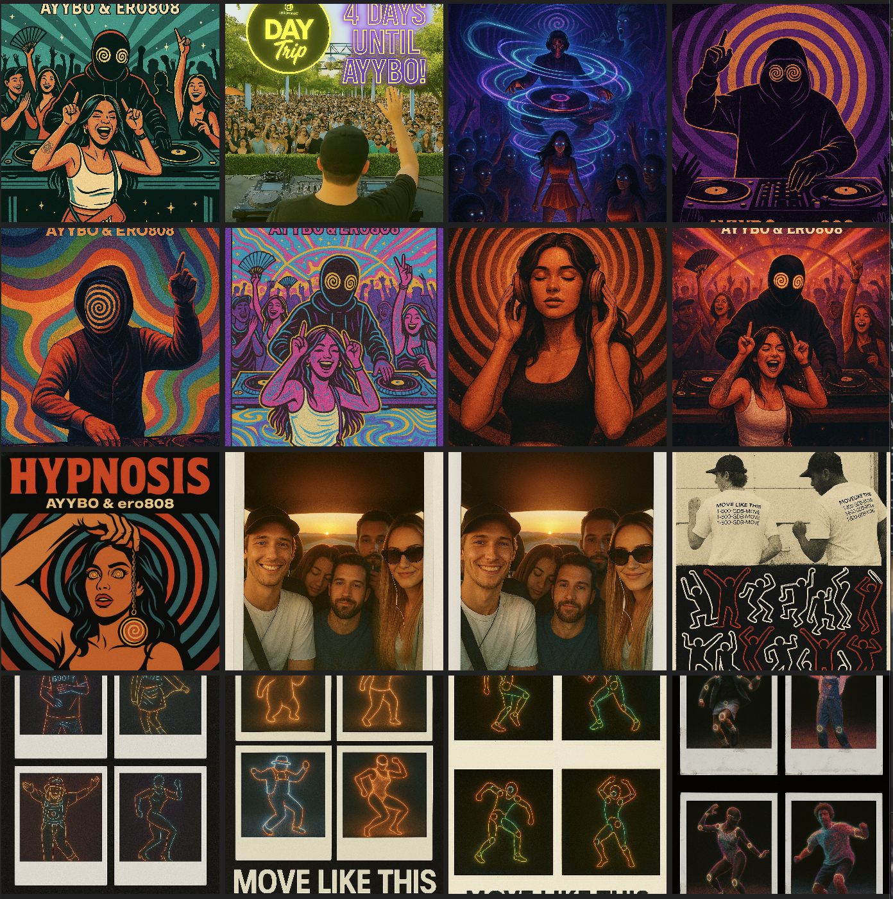

DEEPER WAVES
Simulation Wave
Surreal images, shifting identities, and creative worlds that bend the ordinary.
An idea becomes a world
A recovered moving collage from the Simulation project.

DEEPER WAVES
Surreal images, shifting identities, and creative worlds that bend the ordinary.
A recovered moving collage from the Simulation project.
